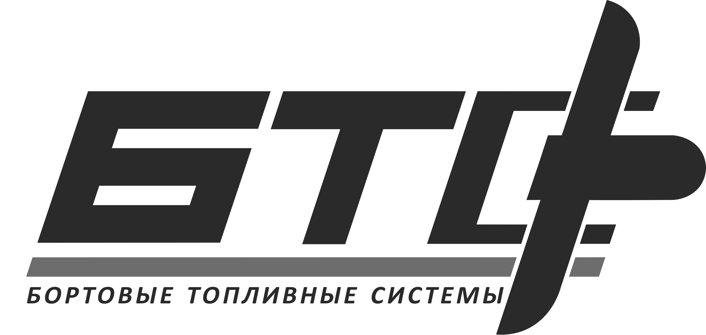

01
Разработка
Форма, объём, расположение штуцеров, технологические ограничения и эксплуатационные требования увязываются ещё до выпуска КД.
↗
МЯГКИЕ ТОПЛИВНЫЕ БАКИ / БВС
Разработка бака под конкретный топливный отсек, согласование интерфейсов и сопровождение интеграции в состав БВС.
Как мы интегрируем01 — 03 / КОМПЕТЕНЦИИ
Форма, объём, расположение штуцеров, технологические ограничения и эксплуатационные требования увязываются ещё до выпуска КД.
↗Прорабатываем топливный отсек, опоры, трассировку магистралей, дренаж и доступность монтажа совместно с конструкторской группой БВС.
↗Переходим от согласованной геометрии к оснастке, опытному образцу, проверке и повторяемому изготовлению изделий.
↗ИНТЕГРАЦИЯ В БВС
Мягкий бак раскрывает преимущество только тогда, когда геометрия отсека, крепление, штуцеры и эксплуатация рассматриваются как единая задача.
СИСТЕМНЫЙ ПОДХОД
Использование доступного объёма без необходимости строить бак вокруг стандартной жёсткой формы.
Расположение интерфейсов определяется компоновкой конкретного воздушного судна и доступом при обслуживании.
Конструктивные изменения по результатам примерки и испытаний возвращаются в изделие, а не остаются проблемой сборочного участка.
БТС / ПРОДУКТ
Индивидуальная геометрия
Вместо выбора ближайшего типоразмера исходной точкой становится реальная геометрия топливного отсека и требования конкретного проекта.
Обсудить исходные данные ↗ПРОЦЕСС
Геометрия отсека, требуемый объём, ограничения по интерфейсам и монтажу.
Форма бака и размещение узлов согласуются с конструкцией БВС.
Изготовление, примерка, корректировки и подготовка к проверкам.
Контроль герметичности и испытания по согласованной программе.
Повторяемое изготовление и инженерное сопровождение изделия.
НАЧАТЬ ПРОЕКТ
Для первого обсуждения достаточно компоновки, ориентировочного объёма и основных ограничений по установке.
info@btsystems.ru ↗